Practica 3 - Modulaciones digitales
Maria José Medina y Teresa González
Contents
- 2. MODULACIÓN DIGITAL POR DESPLAZAMIENTO DE FASE
- Ejercicio 2.1: Modulacion QPSK
- EXTRA: REPRESENTACIÓN DQPSK
- Ejercicio 2.2: Modulacion QPSK con ruido
- Ejercicio 2.3: Cadena de modulación-demodulación QPSK-DQPSK
- Ejercicio 2.4: Curvas de BER frente a EbNo para QPSK y DQPSK
- Ejercicio 2.5: Influencia de la rotación de la fase o error de fase en recepción
- 3. MODULACION DIGITAL EN n-QAM y APSK
- Ejercio 3.1: Curvas de BER frente a EbNo para QAM y APSK
- EXTRA: Comparacion 16APSK Y 16QAM.
2. MODULACIÓN DIGITAL POR DESPLAZAMIENTO DE FASE
Ejercicio 2.1: Modulacion QPSK
En este apartado se modula una señal de entrada sin ruido en QPSK. Para ello, se utiliza la función dada moduladorQPSK (4 niveles). En esta función se cogen los elementos de un vector par de 2 en 2 y se calculan los componentes fase (I) y cuadratura (Q) tomando el primer y segundo elemento de cada par respectivamente.
% Vector de entrada con longitud par (8). x = [ 1 1 1 0 0 1 0 0]; % Salida modulador y_qpsk = moduladorQPSK(x); % Representacion puntos constelación scatterplot(y_qpsk); title('Constelación QPSK')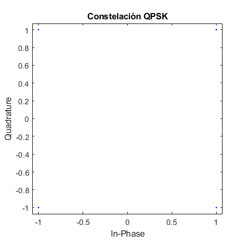
Como se puede observar en la representación, ya que no hay presencia de ruido, los puntos de la salida coinciden exactamente con los de la constelación QPSK.
EXTRA: REPRESENTACIÓN DQPSK
DQPSK consiste en modular cada elemento de forma relativa con respecto al anterior (tiene memoria). La fase se calcula haciendo como la suma de la fase del símbolo anterior más la fase del símbolo actual. A continuación, se representa la constelación DQPSK para compararla con la de QPSK a partir de una señal de entrada aleatoria binaria.
N=10000;
x=randi([0,1],1,N);
y_dqpsk=moduladorDQPSK(x);
scatterplot(y_dqpsk)
title('Constelación DQPSK')
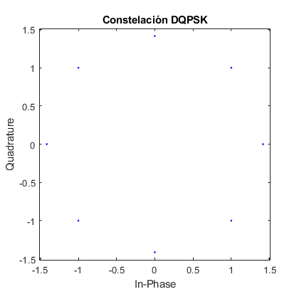 Como se puede observar, en vez de 4 puntos hay 8, ya que calcula la suma de un punto con el resto para todas las combinaciones de coordenadas existentes en QPSK.
Ejercicio 2.2: Modulacion QPSK con ruido
En este apartado se genera una señal binaria aleatoria de longitud N=10000. A esta se le añade ruido awgn, con distintas SNRs (5,10,15 db). Se modula en QPSK como el apartado anterior.
N=10000; snr_db = [5, 10, 15]; % señal x=randi([0,1],1,N); % salida modulacion y_qpsk=moduladorQPSK(x); % Bucle SNRs para generar señal awgn y representarla en scatterplot. for k=snr_db y_noise=awgn(y_qpsk, k, 'measured'); scatterplot(y_noise); title(['Constelacion QPSK con SNRdb=' num2str(k)]) end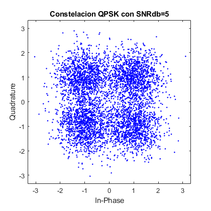 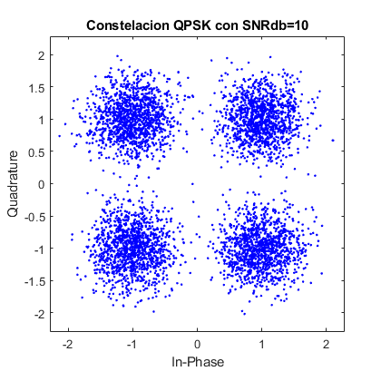 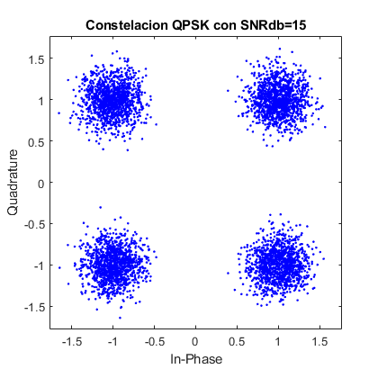
Como se puede observar en los distintos scatterplot, a mayor SNR más concentrados están los puntos resultantes, por lo que la BER resultante será menor. Al contrario, con SNR inferiores, los puntos están más dispersos, lo que supone un mayor error de detección. Idealmente, la distancia entre puntos es de 2 unidades y el umbral de decisión se encuentra en cero tanto para fase como para cuadratura. En este caso, con el SNR mayor (15 db)la nube de puntos formada en torno a los valores sin ruido tiene un radio de 0.5 aproximadamente. Al ser este radio menor que la distancia al umbral de decisión (1 unidad), el error no es significativo. Con SNR=10 db, el radio de la nube de puntos es 1 aproximadamente, por lo que se encuentra muy próximo al umbral de decisión, causando mayor confusión. Por último, con la SNR menor (5db), el radio es 1.3 aproximadamente, un 30% mayor que la distancia al umbral de decisión. Por ello las nubes de puntos se solapan y al calcular la distancia mínima no se garantiza una detección correcta.
Ejercicio 2.3: Cadena de modulación-demodulación QPSK-DQPSK
En este apartado se modula y se demodula la señal aleatoria del apartado anterior, tanto en QPSK como en DQPSK.
% QPSK x_demod=demoduladorQPSK(y_qpsk); dif_qpsk=max(abs(x_demod-x)); disp("BER QPSK ="+dif_qpsk) % DQPSK y_dqpsk=moduladorDQPSK(x); x_demod=demoduladorDQPSK(y_dqpsk); dif_dqpsk=max(abs(x_demod-x)); disp("BER DQPSK ="+dif_dqpsk)
BER QPSK =0 BER DQPSK =0
Como se puede observar, en ausencia de ruido, la señal de entrada y salida de la cadena son idénticas, por lo que BER=0 (la diferencia entre ambas bit a bit es 0) en ambos tipos de modulación.
Ejercicio 2.4: Curvas de BER frente a EbNo para QPSK y DQPSK
En este apartado se realiza una comparativa de las BERs teóricas y reales (en presencia de ruido awgn) frente a valores de EbNo tanto para QPSK como DQPSK. Para ello se utiliza un vector EbNo de -5 a 20dB.
EbNo_dB = -5:2:20; EbNo = 10.^(EbNo_dB/10); k = log2(4); %Numero de bits por simbolo SNR_dB = EbNo_dB + 10*log10(k); % QPSK % Fórmulas qpsk teorica BER_teor_QPSK = qfunc(sqrt(2*EbNo)); BER_teor_QPSK(BER_teor_QPSK<1e-5)=NaN; % salida modulacion y_qpsk=moduladorQPSK(x); % bucle para calcular la BER real para cada valor de EbNo (db). for k=1:length(EbNo_dB) % señal con ruido awgn. y_noise=awgn(y_qpsk, SNR_dB(k), 'measured'); % señal demodulada x_demod=demoduladorQPSK(y_noise); % diferencia entre señal demodulada con ruido y la de entrada. El total % de diferencias es el error. diferencia=abs(x_demod-x); % BER= total error/longitud. BER_real_QPSK(k)= sum(diferencia)/N; end % DQPSK % Fórmulas BER teórica. BER_teor_DQPSK=1.13*qfunc(sqrt(1.2*EbNo)); BER_teor_DQPSK(BER_teor_DQPSK<1e-5)=NaN; %señal modulada y_dqpsk=moduladorDQPSK(x); for k=1:length(EbNo_dB) y_noise=awgn(y_dqpsk, SNR_dB(k), 'measured'); x_demod=demoduladorDQPSK(y_noise); diferencia=abs(x_demod-x); BER_real_DQPSK(k)= sum(diferencia)/N; end figure semilogy(EbNo_dB,BER_teor_QPSK, '-ob') hold on; semilogy(EbNo_dB, BER_real_QPSK, '--r') title('Comparación BERs') xlabel('EbNo(db)') ylabel('BER') hold on; semilogy(EbNo_dB,BER_teor_DQPSK, '-og') hold on; semilogy(EbNo_dB, BER_real_DQPSK, '--m') legend('BER QPSK teorica', 'BER QPSK real', 'BER dQPSK teorica', 'BER DQPSK real') grid on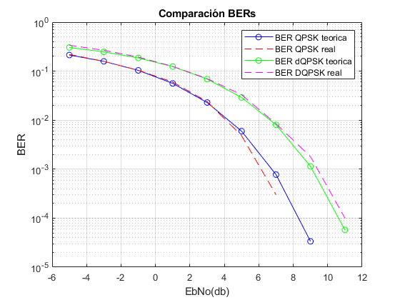
Como se puede extraer de la comparativa, tanto las BERs teórica como la real se ajustan con mucha precisión en ambos tipos de modulación. Por otro lado, cuanto mayor es el EbNo, mayor es SNR, por lo que la BER cae a valores despreciables (menor que 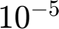). Por ejemplo, para un BER=$10^{-5}$, en el caso de QPSK se necesitan 9db de EnBo, mientras que en DQPSK se necesitan 11db, una diferencia de 2db. Esto significa que en DQPSK tanto la BER teórica como la real son mayores que en QPSK. El motivo es que, al tratarse de un sistema con memoria, el error se acumula de un símbolo al siguiente, y se puede ver tanto en la gráfica como de forma analítica el efecto que tiene sobre todo para SNRs relativamente altas, donde la diferencia respecto a QPSK es mayor.
Ejercicio 2.5: Influencia de la rotación de la fase o error de fase en recepción
En este apartado además de ruido awgn se añade a la señal modulada una rotacion fase entre 10 y 30º tanto para QPSK como DQPSK.
% QPSK % bucle para añadir rotacion con exponente complejo. for n=10:10:30 scatterplot(y_qpsk*exp(n*1i*pi/180)); title(['Señal con rotacion de fase = ' num2str(n) 'º']) grid on end % Como se puede observar, debido a la rotación de fase la distancia al % umbral de decisión queda significativamente reducida. En el caso de % rotación de 10º, la distancia mínima para de 1 a 0.8 aproximadamente. % Para 20º, 0.6 y para 10º, 0.4. Esto causa que se necesite un apotencia de % ruido mucho menor generar el símbolo erróneo, por lo que la BER aumenta % considerablemente.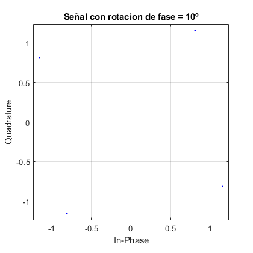 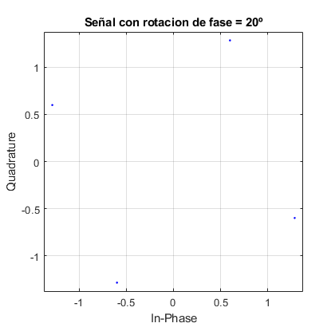 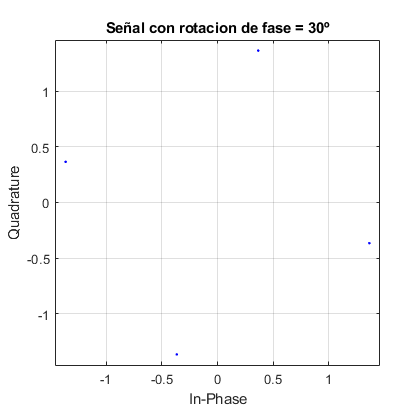
Se representa la señal modulada en QPSK rotada 10-20-30º.
% figura BER teórica QPSK figure semilogy(EbNo_dB,BER_teor_QPSK, 'b') hold on; % bucle para añadir ruido y rotación de fase a la señal modulada. for n=10:10:30 for k=1:length(EbNo_dB) y_noise=awgn(y_qpsk*exp(n*1i*pi/180), SNR_dB(k), 'measured'); x_demod=demoduladorQPSK(y_noise); % demodulacion. diferencia=abs(x_demod-x); % calculo BER real. BER_real_QPSK(k)= sum(diferencia)/N; end % representacion BER real semilogy(EbNo_dB, BER_real_QPSK) hold on; end title('Comparación BERs con rotación de fase') xlabel('EbNo(db)') ylabel('BER') legend('BER QPSK teorica', 'BER QPSK real rotada 10º', 'BER QPSK real rotada 20º', 'BER QPSK real rotada 30º') grid on;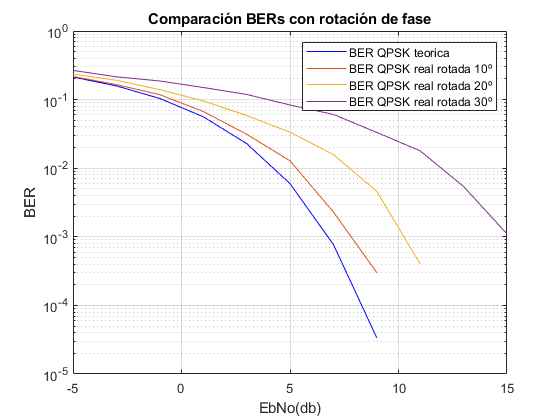
Como se puede observar, a mayor rotación de fase, mayor es la diferencia entre la BER teórica y la real. A mayor ángulo, más suave es la pendiente de la BER respecto a EbNo. El motivo es que al introducir diferencia de fase, se rota los puntos de la constelación pero no los límites de decisión (ejes), por lo que en presencia de ruido es más probable que los puntos caigan en cuadrantes erróneos. Cuantitativamente, para conseguir una BER de 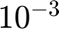, se necesitan las siguientes EbNo: 0º -> 7db 10º -> 8db 20º -> 11db 30º -> 15db Es decir, a mayor rotación de fase, mayor es la SNR necesaria para conseguir el mismo nivel de BER.
% DQPSK for n=10:10:30 scatterplot(y_qpsk*exp(n*1i*pi/180)); title('Señal con rotacion de fase'); end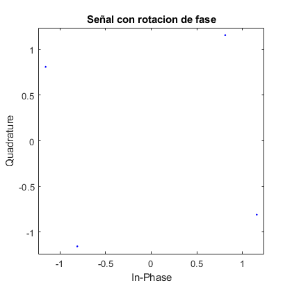 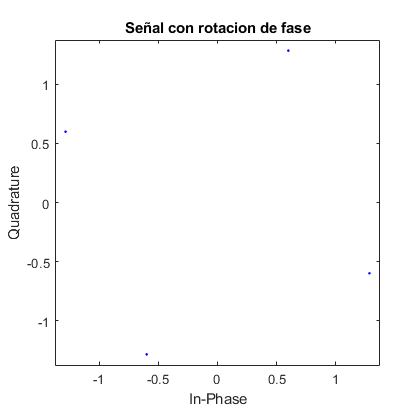 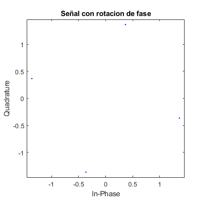
Se representan las señales rotadas.
% BER teorica figure semilogy(EbNo_dB,BER_teor_DQPSK, 'g') hold on; % bucle calcular ruido + rotacion de fase for n=10:10:30 for k=1:length(EbNo_dB) y_noise=awgn(y_dqpsk*exp(n*1i*pi/180), SNR_dB(k), 'measured'); x_demod=demoduladorDQPSK(y_noise); diferencia=abs(x_demod-x); % BER real BER_real_DQPSK(k)= sum(diferencia)/N; end semilogy(EbNo_dB, BER_real_DQPSK) hold on; end title('Comparación BERs con rotación de fase') xlabel('EbNo(db)') ylabel('BER') legend('BER DQPSK teorica', 'BER DQPSK real rotada 10º', 'BER DQPSK real rotada 20º', 'BER DQPSK real rotada 30º') grid on;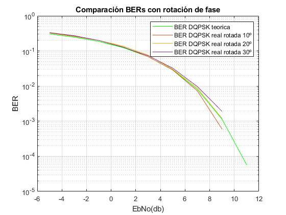
Como se puede observar, la rotación de fase en DQPSK no afecta prácticamente a la BER, debido a su carácter diferencial ya explicado. Se compienza a apreciar una ligera diferencia en torno a BER=$10^{-3}$: 0º -> 9db 10º -> 8db 20º -> 8db 30º -> 9db Estos valores son muy parecidos y el año de que se necesite menos SNR para 10º y 20º que para el resto puede deberse al carácter aleatorio del ruido.
% Comparacion entre BERs QPSK Y DQPSK con 30º. figure semilogy(EbNo_dB,BER_teor_QPSK, '--b') grid on hold on; semilogy(EbNo_dB, BER_real_QPSK, '-ob') title('Comparación BERs con rotación de fase 30º') xlabel('EbNo(db)') ylabel('BER') hold on; semilogy(EbNo_dB,BER_teor_DQPSK, '--r') hold on; semilogy(EbNo_dB, BER_real_DQPSK, '-or') legend('BER QPSK teorica', 'BER QPSK real', 'BER DQPSK teorica', 'BER DQPSK real')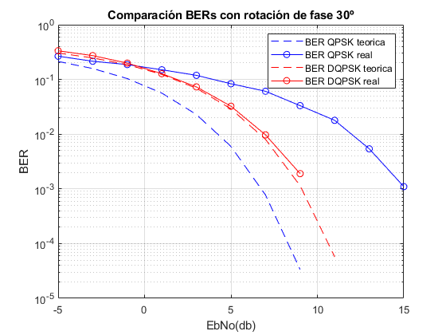
En esta gráfica se comparan las BERs teórica y real de QPSK y DQPSK con una rotación de 30º. Se corrobora la sensibilidad que tiene la BER ante desplazamiento de fase en el caso de QPSK en comparación a DQPSK. Por lo tanto, se puede afirmar que en caso de sumar a la señal símplemente un ruido blanco gaussiano, es preferible usar QPSK ya que para la misma SNR, la BER es mayor. Sin embargo, en caso de que exista también rotación de fase, ya sea porque el canal introduce distorsión o porque existe un desfase en muestreador del receptor, es preferible utilizar DQPSK.
3. MODULACION DIGITAL EN n-QAM y APSK
Ejercio 3.1: Curvas de BER frente a EbNo para QAM y APSK
En este apartado se modula en amplitud con QAM y APSK, a partir de unas funciones dadas.
%n-QAM % niveles n=[4,16,64,256]; figure %bucle para cada nivel, calcular las BERs teorica y real colors = ["r"; "--r"; "b"; "b--"; "g"; "g--"; "y"; "y--"] p = 0 for k=n p = p+1; [BERQAM, BER_teorQAM] = BER_m_ary_QAM(k, EbNo_dB); semilogy(EbNo_dB, BER_teorQAM, colors(p)) hold on; grid on p = p+1; semilogy(EbNo_dB, BERQAM, colors(p)) hold on; end title(['Comparación BERs -QAM']) legend('BER QAM teorica 4-QAM', 'BER QAM real 4-QAM', 'BER QAM teorica 16-QAM', 'BER QAM real 16-QAM', 'BER QAM teorica 64-QAM', 'BER QAM real 64-QAM', 'BER QAM teorica 256-QAM', 'BER QAM real 256-QAM') xlabel('EbNo(db)') ylabel('BER')
colors =
8×1 string array
"r"
"--r"
"b"
"b--"
"g"
"g--"
"y"
"y--"
p =
0
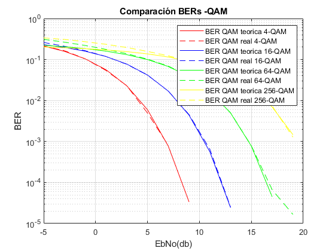 En primer lugar, a mayor N(número de niveles), mayor es el número de puntos de la constelación, por lo que más próximos están unos de otros. Si a la señal de entrada se añade ruido, en una constelación con un número de niveles grande (256) se dificulta el cálculo de la distancia mínima entre puntos, y por tanto puede dar lugar a una detección errónea. En relación a esto, el valor de la BER teórica y la real se alcanza a distintos niveles de EbNo: 4QAM -> 16QAM - -1db. 64QAM -> 4db. 256QAM -> 11db. Se corrobora que la diferencia entre la BER teorica y la BER real con N=256 es muy notable. Utilizar esta N supone alta probabilidad de error. Por otro lado, cuantitativamente, respecto a una BER fija de se necesitan los siguientes valores de EbNo: 4QAM -> 6db. 16QAM -> 10db. 64QAM -> 14db. 256QAM -> 19db. Cuanto mayor es N, mayor EbNo (y SNR) se necesita para llegar a una BER determinada.
%APSK %APSK16 M16=[4,12]; R16=[1,2.5]; % BER simulada BER_APSK16 = BER_APSK(M16, R16, EbNo_dB); %APSK32 M32=[4,12,16]; R32=[1,2.5,4.3]; % BER simulada BER_APSK32 = BER_APSK(M32, R32, EbNo_dB); % Representacion comparacion BERS APSK figure semilogy(EbNo_dB, BER_APSK16) hold on; grid on title(['Comparación BERs APSK']) xlabel('EbNo(db)') ylabel('BER') semilogy(EbNo_dB, BER_APSK32) hold on; legend('BER APSK-16', 'BER APSK-32')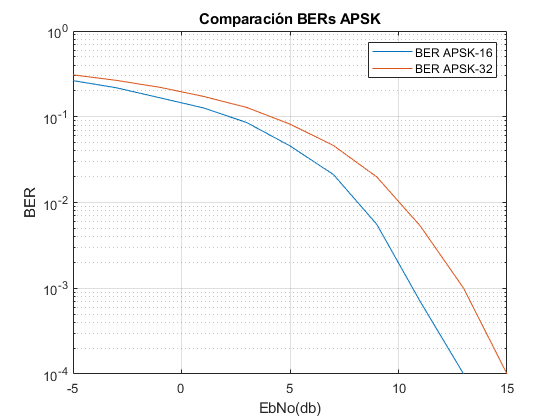
Se puede observar que la pendiente de la BER con N=32 es más suave que con N=16, por lo que de nuevo, cuanto mayor es N, mayor EbNo (y SNR) se necesita para llegar a una BER determinada. Cuantitativamente, respecto a una BER fija de se necesitan los siguientes valores de EbNo: 16APSK -> 11db. 32APSK -> 13db. Por tanto, la diferencia es 2db.
En conclusión, cuanto mayor es el número de símbolos, mayor es la BER para la misma SNR. Sin embargo, la velocidad de transmisión también aumenta, por lo que puede compensar tener una mayor BER si tener algún error de transmisión no impide la comunicación (por ejemplo en el caso de comunicaciones en directo es preferible que haya errores a que haya retardo) o si se cuenta con un corrector de errores en recepción.
EXTRA: Comparacion 16APSK Y 16QAM.
Ambas son modulaciones en amplitud y en fase. La diferencia es que la constelación tiene una geometría distinta. Comparando la SNR que se necesita para obtener una BER fija de , se concluye que 16-QAM es ligeramente menos sensible al ruido. Esto se debe a que para la misma SNR, los símbolos en QAM están más separados. Por ejemplo, para el caso de 16-QAM, la distancia entre símbolos es de aproximadamente 2 unidades mientas que para 16-APSK es de tan solo 1.3 unidades. Para PSK normal, esta distancia es incluso menor, siendo de tan solo 0.98 unidades. La ventaja que tiene PSK sobre QAM es que al no modularse en amplitud, los requisitos de linearidad de los amplificades necesarios para llevarlo a cabo son menores, por lo que se puede utilizar de clase C, los cuales son más eficientes. Por lo tanto, APSK puede ser un buen compromiso para cuando se necesite eficiencia pero se necesite reducir la BER.